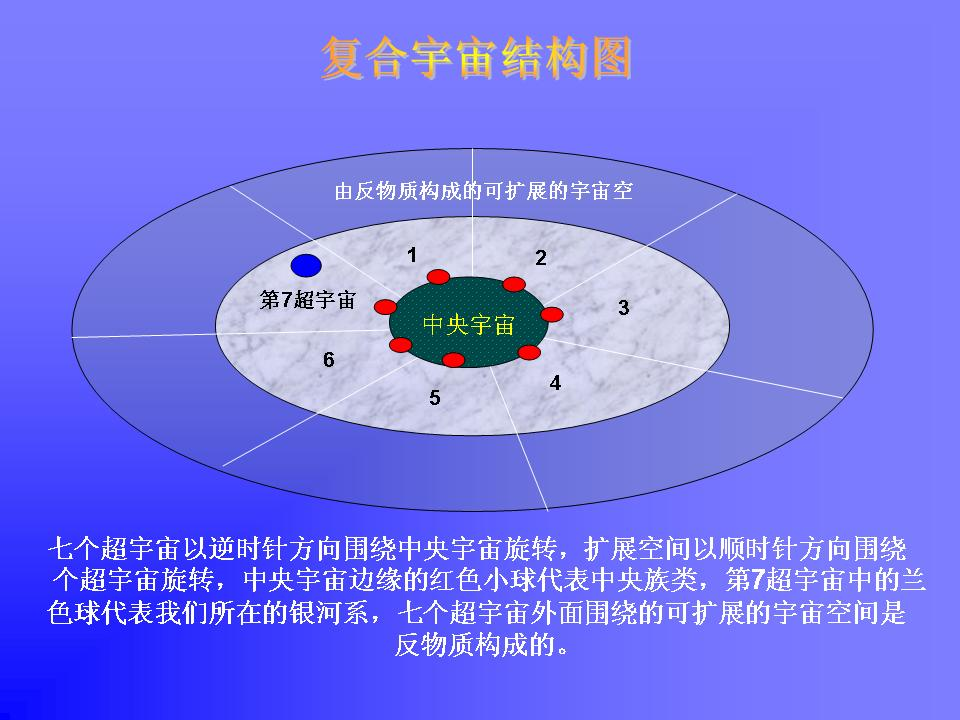
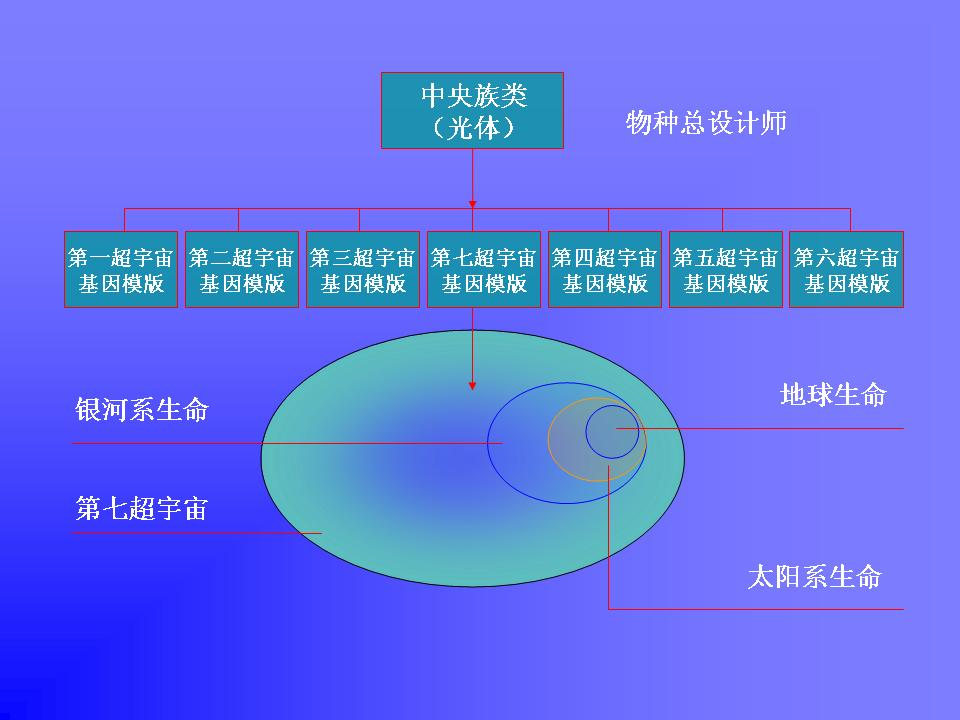

伟大的入口（精简版）
作者:壶子http://www.freewing.org
‘伟大的入口’基本理念
一、宇宙的基本构成情况

宇宙的结构被分割成,以一个中央宇宙为中心的七个超宇宙。中央宇宙被黑暗的引力主体所围绕而使得它实质上是看不见的,即使是对那些位在最靠近它的圆周的银河系来讲也一样。附带一提,在它的圆周上住着中央族类。
中央宇宙是不动(不增不减)且永恒的,而七个超宇宙是时间的产物,以逆时针方向绕着中央宇宙旋转。围绕着这七个超宇宙外面的蓝灰色圆周是由‘反物质’等非物质性原始要素构成的浩瀚空间,它们以顺时针方向绕着七个超宇宙旋转。这个浩瀚的外在空间,是可以让超宇宙扩展而进入的空间。我们的天文学家所看到的已知的宇宙,大部份是我们的超宇宙的一个小碎片，以及在它的圆周的最外围之扩张的空间。
在中央宇宙的边缘上居住着中央族类,他们拥有自宇宙的创造以来最原始的‘人类DNA模板’。对我们来讲他们显得像是‘上帝们’一样,如果按照线性时间和空间的逻辑，那么中央族类就是未来的我们自己。他们不仅拥有最原形的基因模版，并且与被造物联合运作在银河系中播种生命，所以被我们祖先称呼为‘造物的众神’。
七个超宇宙里的每一个都有着一种特殊的目的,并且经由中央族类而与中央宇宙有着一种特殊的关系,中央族类同时设计了那些超宇宙的基因原型，而使那些超宇宙内同样存在物种生命。或者说中央宇宙是七个超宇宙内的所有物种之共同造物主。
整个宇宙是由11个密度复合而成的，又称为11个次元，从最精微的振动场到物质性的超宇宙中间有11个不同级别的振动频率。每一个超宇宙大约包括2800亿个银河系，每个银河系中大约有108个有生命现象的行星。
需要强调的是：最初源头是三位一体的整体存在，而中央宇宙是最初源头之物质性的存在部分，或者叫物质性的家。很少人了解到,为了要治理物质宇宙,最初源头必须要栖身于物质性的实体里而在物质宇宙中运作。
二、宇宙内存在的物种体系

这张图以简略的形式体现了复合宇宙中存在的物种体系关系，中央族类以总物种设计师的身份和能力设计了全部七个超宇宙内的基因原型，并以此基因原型为模版，定制复合宇宙不同次元（振动场）内的物种载具（灵魂载具）。
我们所在的第七个超宇宙内的物种体系如图所示，我们的银河系是第七超宇宙之内的一个普通的银河系，每一个超宇宙内大约包含2800亿个银河系，银河系内有我们的太阳系，太阳系内有我们的地球。不同生命系有不同的造物主，自上而下的造物模式纷呈，每一次造物都是制造了一个文明周期。都是道生一、一生二、二生三、三生万物的过程，同时也是万物突破意识限制成为新的造物主的过程。地球级别生命是太阳系生命的造物。这里需要明确一个问题，复合宇宙内存在的物种生命都源于中央族类的基因原型，但不同级别星系会因能量振频不同而略有不同，所以银河系基于第七超宇宙、太阳系基于银河系、地球基于太阳，通俗的讲就是上一级星系就是下一级生命的造物主。
三、存有的存在机制

上面介绍了复合宇宙内所有物种存在机制，这里我们单独讲类人生命在复合宇宙中是什么模式。
我们按照线性逻辑来讲解，中央族类是最初的生命形式，它源于最初源头的第一次分裂，中央族类以一种光物质构成了自己的身体形式，但他们虽然与最初源头之间是分开了，但中央族类并没有获得独立的身份和感觉，它们的意识仍属于‘没有形式的意识’，他们继承了中央宇宙的永恒属性，并且拥有复合宇宙内物种基因总模版，它们存在的意义就是设计七个超宇宙的基因原型，并设计出适合不同星系的灵魂载具，它们每设计完一个载具出来，最初源头的意识就分裂自己进入该载具中，如果把中央族类称为第一级存有，那么他们设计的不同星系的载具就是第二级存有，当最初源头意识进入该载具后，存有的独立感觉立即有效，‘没形式的意识’变成了‘有形式的意识’，一个执行探索任务的存有诞生了。
这些存有存在的意义是探索不同的宇宙，因第七超宇宙及扩展空间都困于时间的幻觉之中，所以第二级存有可以同时观察非常久远的时间跨度，所以这些存有们根据探索焦点不同而结合为不同的存有集团，这些集团内的存有也被分配了探索面向的某一个任务，于是这个存有把自己分身为一千份进入跨度20万年的时间架构内，存有同时平衡这上千个分身的探索经验，分身与存有之间是全息连接的，分身相当于存有的一个探头。我们生活中的每一个人都是这些不同存有的不同分身。存有就是我们的‘高我’，比如许多通灵者常说的今天的某人是某世的某人的转世，谁在多少年前是什么人，在前世是什么人，今世是什么人。这些说法其实是在告诉我们这些世间人的转世实际上是他们拥有一个存有，是这个存有投放在不同时代的探头，他们之间是同时存在的关系，所谓的前世记忆还不如说是存有的片段记忆被今世的你获得了而已。
这些分身随着不断成长，逐渐的回忆或感觉到了自己只是存有的一个身份，还有太多的身份分布在时间历史中，并能与这些分身互动，最后综合起来达到存有的意识状态，继续下去会逐渐达到更高存有的意识状态，然后达到中央族类的意识状态，最后与最初源头合并。
这个过程就是人类的心灵进化图景。
四、宇宙教导师的存在
中央族类中有一部分存有专注于复合宇宙内物种体系的整体演进，并为每一个角落的物种提供智能援助，它们与造物师之间有着不同的分工，那就是造物师的设计除符合生命本身的需求外还要具备与教导师的智能援助产生互动的能力，而教导师的教导必须能有效的触发设计师的设计编码，以达到物种的演进目的。
所以整个复合宇宙存在三个层次的教导智库，超宇宙级的智库母版是一切万有，银河级的智库母版是超宇宙级别的智库，行星级的母版正是银河级的。级别逐级递减，我们地球使用的智库是银河级，这个智库需要教导师的成员以肉身形式进入物质世界来具体本地化的。除此之外，教导师们与地球周围的非物质的教导成员配合，连贯的向地球人类输送智能，这种智能被我们俗称为‘灵感’和‘创造力’，可以说人类的每一步演进甚至每一个思维都在教导师的把控之中，为的是那整体的计划得以完成。
在这过程中，教导师根据演进的需求从人类中拣选了许多代表进行培训，培训的过程有时不为我们所知，有的可以知道。这些被培训的人就逐渐的成为了人类的先知和领袖，带领着人类前进。
五、演进中的智慧形态

当总设计师设计物种载具时，就把完整的智库集成在载具的DNA中了，载具从基因模版中还继承了情感和心智的结构模式、本能及性格结构模式，是这个DNA中的信息密码驱动着人类的行为，随着时空的不同而触发不同时代的基因编码，因此不同时代的人类似乎在不同的能量/信念系统、存在模式的支持中，比如在即将过去的几千年中，人类在大自然面前自惭形秽，似乎是自己在侥幸活着，必须顺从大自然或强势集团，把对美好和完整的期待投放在慢长的进化时间周期中，总盼望有救世主降临人间救民于水火。而自己则因为能力低微而显得无能为力。这可以称之为幸存的能量系统和顺从的信念系统存在于进化和救赎的心理模式中。这个阶段十分漫长且顽固，现在的人类绝大多数都处在这个阶段之中无法自拨。但是由于有教导师的总体安排，一些地球教师被培训出来了，于是有部分人类开始发现人本身并不渺小，自己的身心就是宇宙的缩小版本，自己完全可以通过特定的形式打开自己早已经存在的智库而完善自己，这种提升和完善甚至不必遵循时间的尺度和救世主的救赎，人类可以通过改善与宇宙的关系和心灵认识来提升自己的能量结构，转变变成了自己的行为，而不必受任何外力的羁绊，这样一种称为探索的能量系统和转换的信念系统被确立，心灵结构也逐渐修正为转变和自主的模式中。这种种改变意味着人类的演进进入了一个新的阶段。这个阶段已经在地球文明中开始并形成规模。
上面这张图模拟了宇宙生命进化的树状演进示意图，这是一种智慧形态的升级，这是一种物种全面的迈进。
六、伟大的入口的发现

地球文明的升级版是进入星际文明的棋盘，这是所有先知教导的共同宣言。但是尽管有教导师那无形之手的调控，工作还是需要人类自己动手才更符合宇宙意图。在目前的人类各不同信仰层级上，并没有真正的达成高度的一致，科学与宗教、哲学之间尚不能形成统一的认识，在本体论层面仍有着不小的分歧，在实现途径上仍各唱各的调。虽然这正是宇宙的实相所在，但引导却总在发挥着作用，事实上角色之间不存在谁不应该存在的问题，只存在焦点与功能的区别，这种区别恰是剧情需要的结果，如何配合‘无形之手’而运用‘有形之手’自然调控角色的定位与分工则必然是人来实施的工作内容，但这种调控不是强硬的而是和缓的，不是故意的而是自然的，这双手没必要过分宣传自己的特殊性而只是向人们招手，提醒这双手的存在就可以了，看到并领悟了的人自然被调控了。
伟大的入口是指人类灵魂的本质被科学所证明，灵魂各组成部分之性能被物理的标示并被所有人认可。这件事情将引发人类集体的转变，使地球人类大同修的场面得以实现。在上面这张图中可以看到，人类的意识结构由六部分组成，其中两部分在物质宇宙存在，剩下的四个部分存在于非物质世界，这正是我们目前无法证明的东西。所谓伟大的入口正是这六个部分被科学所证明，六部分的功能和相对应的关系被物理的标示出来。其实现在各信仰体系所致力于的都是这个事情，只是有的体系的认识还需要有形之手给予调控而已。比如有的体系只专注于个体的提升，对整体的演进没有兴趣，甚至对从事整体提升的参与者冷嘲热讽，似乎这些人在有为，而他们是无为的高人。在这里我需要说明，任何与母体（地球）不同步的提升都是不完全的提升，尽管他们宣称自己悟到了什么和见到了什么，甚至能心想事成。但可以肯定他们的提升是不充分的、不完全的，因为人类是附着在地球之上的生命，母体的振频不提升则附着生命的完全提升是不可能的，它必然要受母体振频的制约。星际文明圈不会接纳提升不完全的个体，只有地球的频率同步提升了，人类的生命结构才会完全和完美，地球人类才会真正的步入高级文明的门槛。
所以致力于地球整体提升才是智慧之士的选择，传统修炼的个体境界必然成为科学发展的前沿哨兵，科学同样是一种信仰体系，这个体系同样面临版本升级的问题，但科学的求索方法已经深入人心，在个体境界无法普及、无法实证的今天，寄希望于提升科学理念的版本从而证明人类灵魂的存在就成了伟大入口的必然选择。
不是争论长短的时候了。不是比较优劣的时候了，现在需要的是各自完成自己的使命，各就各位。每一个人或组织都有其天然的使命，这个天然的使命必须被彻底的执行和完成，整个局面才会有序演进。不是需要否定对方、而是需要帮助对方确定本位，不是需要打倒对方，而是需要促成对方的自我实现。
准备好了吗？
后话：复合宇宙是永恒存在的，一切人文版本的创始和扩张学说都是人类想象的产品。但是为了伟大的入口理念的传播效率，我不得不以地球人类的逻辑来形成本文的表达，这是逻辑的需要，这是心智的需要，这是呈现的需要。选择是最初源头的行为，其余则没有真正意义的选择。反过来讲，存在的一切本身就是选择。